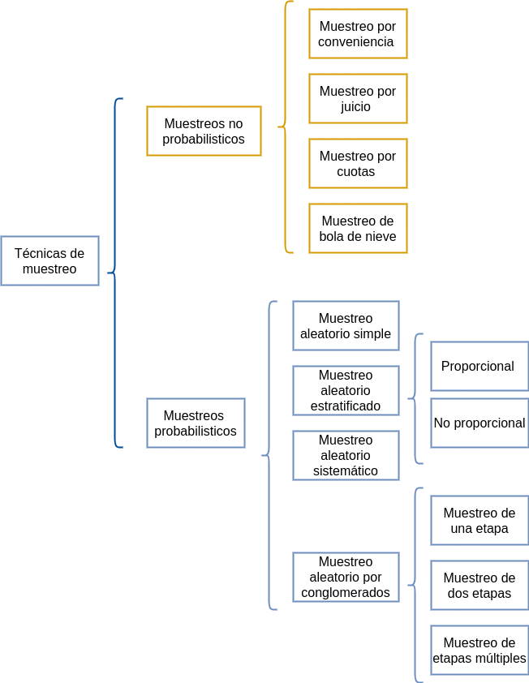

La inferencia estadística permite generalizar lo hallado en una muestra a toda la población. Para realizar este proceso contamos con dos opciones: Estimación y las Pruebas de hipótesis. El fundamento de estos procesos está relacionado con varios conceptos como:
En Estadística, se identifica el término población con el dominio de la variable aleatoria X, asociada a los objetos o individuos sobre los cuales se desarrolla un experimento y cuyo valor ocurre al azar. El estudio del conjunto de todas las mediciones de interés para un investigador se llama CENSO (Mendenhall (2008)). Como ejemplo podemos mencionar la población de habitantes de Colombia que se estudia a través del Censo de población que se debe realizar cada diez años.
Un subconjunto extraído de los elementos que conforman la población se denomina MUESTRA. Una definición técnica de muestra está dada por: repetición \(n\) veces, en idénticas condiciones de la experiencia aleatoria, se puede obtener \(n\) valores independientes de una variable aleatoria \(X_{1}, X_{2},...,X_{n}\) a la que se le denomina muestra de la variable \(X\).
Es una caracterización numérica de la distribución de probabilidad de una variable aleatoria. Como ejemplo de parámetros tenemos a \(\mu\), \(\sigma^{2}\) que determinan la función de probabilidad de una variable con distribución normal:
\[f(x)=\frac{1}{\sqrt{2 \sigma^{2} \pi}} \exp{\Bigg(- \frac{1}{2 \sigma^{2}}\big(x-\mu\big)^{2}\Bigg)}\]
Y suponemos que los valores correspondientes a estos parámetros son \(\mu=100\) y \(\sigma^{2}=25\) (\(\sigma=5\)) respectivamente, entonces la función de distribución de probabilidad quedará determinada por :
\[f(x)=\frac{1}{\sqrt{50 \pi}} \exp{\Bigg(- \frac{1}{50}\big(x-100\big)^{2}\Bigg)}\]
Es una función de los valores obtenidos en una muestra aleatoria que da como resultado un valor que corresponde a una aproximación del parámetro objeto de estudio. Generalmente se representa como \(\widehat{\theta}\). Como algunos ejemplos podemos citar:
\[\widehat{\mu}=\frac{1}{n}\sum_{i=1}^{n}x_{i}=\bar{x} \] \[\widehat{\sigma^{2}}=\frac{1}{n-1}\sum_{i=1}^{n}\big(x_{i}-\bar{x}\big)^{2} = s^{2}\]
Es la evaluación o generación del estimador para una muestra determinada.
Como ejemplo podemos utilizar uno de los estimadores que estudiaremos : \(\widehat{\mu}= \bar{x}\), para una muestra dada
El papel principal de la estadística está relacionado con el análisis de información que permita tomar decisiones con respecto a una población. Es posible que se pueda estudiar la totalidad de elementos que determinan la población, en este caso estaremos realizando un censo. Sin embargo no siempre podemos estudiar la totalidad de la población por lo cual debemos seleccionar una pequeña parte de ella. A este subconjunto lo podemos llamar muestra.
| Muestra | Censo | |
|---|---|---|
| Presupuesto | pequeño | grande |
| Tiempo disponible | poco | mucho |
| Tamaño de la población | grande | pequeña |
| Varianza de la característica | grande | pequeña |
| Costos de los errores de muestreo | bajos | altos |
| Costos de los errores que no son de muestreo | alto | bajo |
| Naturaleza de la prueba | destructiva | no destructiva |
| Atención a casos individuales | si | no |
Un diseño de muestreo es una estrategia para obtener una muestra, genera algunas preguntas asociadas al proceso de muestreo: ¿cómo seleccionar de una manera óptima la muestra?, ¿Qué característica medir en las unidades observadas? y ¿cómo estimar las características poblacionales a partir de la información muestral?. El proceso de obtención de las muestras por su parte, requiere la definición de algunos aspectos como, ¿cuál es el tamaño óptimo para el cumplimiento de los objetivos?, o ¿mediante qué procedimiento aleatorio se realiza el proceso de selección?, ¿qué tipo de método observacional utilizar y qué medidas tomar?. En el muestreo, uno tiene la oportunidad de seleccionar deliberadamente la muestra, para evitar inducir por ejemplo, a seleccionar por conveniencia algún individuo en particular, situación que pudiera conducir a sesgos en los resultados finales de la investigación.
En resumen, podemos decir que el muestreo consiste en la selección, mediante procedimientos preestablecidos que nos aseguren aleatoriedad y representatividad, de una parte de una colección finita de unidades, seguida de algunas conclusiones respecto de la población, basándonos en la parte de ella que hemos observado. Este proceso se basa en principios relacionados con la inferencia estadística, lo que implica fuentes de incertidumbre (producto de la aleatoriedad), como por ejemplo
a.El método de selección de las unidades. b.El método de medición de las unidades. c.El conocimiento de los procesos que generan los verdaderos valores de las unidades medidas.
Un diseño muestral es una estrategia de selección de unidades muestrales, mediante un proceso de aleatorio definido previamente (plan de muestreo). De acuerdo con esta definición, son tres los elementos esenciales de un diseño muestral:
Constituye la unidad básica a partir de la cual se obtiene la información, pudiendo por tanto, ser éstas personas, o individuos de cualquier tipo si , por ejemplo nuestro interés es estimar la talla promedio; casas, número promedio de habitaciones, o el consumo de energía; comunidades, si los que nos interesa es el número promedio de especies por comunidad, áreas o cuadrículas si deseamos estimar densidades medias o biomasa total, etc.
Aun cuando la unidad muestral esté claramente definida, existen algunos elementos adicionales que pueden afectar el proceso de muestreo, alterando la calidad de la información. En este caso no es la definición, sino la selección de la unidad muestral, la que puede estar sesgada por la naturaleza de la medición, así por ejemplo, si deseamos encuestar a personas para averiguar su tendencia política o su nivel socio económico, pudiéramos sentirnos tentados a seleccionar sus nombres desde una listado de teléfonos, lo que dejaría fuera de la encuesta a todas aquellas personas que no se encuentran en el listado, constituyéndose ello en una fuente de sesgo. En otros casos, la naturaleza del muestreo tiene que ver con el entrenamiento de los encuestadores, es el caso, por ejemplo, de las muestras para identificar fallas en un equipo, en que la experiencia de la persona que recoge la información juega un papel importante en la identificación de los mismos.
Lo anterior significa que, en términos prácticos, la aleatoriedad debe garantizar que cada individuo de la población debe tener las misma posibilidad de ser seleccionado como representante de la población (aleatoriedad). Adicionalmente, exigimos que la elección de un individuo, no esté condicionada a la selección de otro (independencia). Estas dos condiciones, en apariencia sencillas, pueden provocar algunas dificultades.
Una vez que las unidades muestrales han sido definidas y se ha acordado un proceso de aleatorización, debemos preguntarnos, cuántas unidades debemos seleccionar para tener una buena representación en la muestra.
Dado que cualquiera sea el proceso de selección de una muestra existe un costo asociado, el que en la mayoría de los casos constituye una exigencia ineludible, nuestro objetivo principal, será obtener el máximo de información con el menor tamaño de muestra que nos sea posible.
El tamaño de la muestra \(n\) es función de tres elementos que son: la varianza, la confiabilidad y el error de muestreo. Los dos últimos a criterio del investigador.
\[n=\dfrac{z^{2}_{_{\alpha/2}} \sigma^{2}}{e^{2}}\]
Donde:
Varianza (\(\sigma^{2}\)): Caracteriza la variable a estimar. Entre mayor sea su valor, mayor deberá ser el tamaño de la muestra. En ocasiones es necesario realizar una prueba piloto que nos permita tener un valor para calcular \(n\). Otra alternativa puede ser el conocimiento empírico de expertos sobre el rango de la variable. Con este valor podemos estimar una aproximación de la desviación estándar como: \(\sigma =\) rango/4.
Confiabilidad (\(z_{\alpha/2}\) o percentil de la distribución normal estándar)b: Este concepto está relacionado con el grado de veracidad que tienen los resultados obtenidos. Si el estudio es repetido muchas veces, ¿ cuántas de estas coinciden con los resultados obtenidos?. Su valor está relacionado con el percentil de las distribución normal estándar, por ejemplo: una confiabilidad del 95% está relacionada con un valor de \(z=1.96\).
Error de muestreo (\(e\)) : corresponde a la diferencia entre el valor de la característica en la población (parámetro) y el valor obtenido con la información de la muestra (estimador).Equivale al error que estamos en capacidad de tolerar en las unidades de la variable.
Ejemplo
Caso de una media :
Suponga que deseamos determinar el tamaño de la muestra para estimar la media de la nota del curso de Métodos, con una confianza del 95% y un error de muestreo de 0.2 puntos. Un estudio realizado el semestre pasado arrojó una varianza de 1.6.
La información necesaria para el calculo del tamaño de muestra requerido es:
percentil 97.5 de la distribución normal \(z=1.96\) (Entre -1.96 y 1.96 se encuentra el 95% de los datos)
varianza \(\sigma^{2}=0.4\)
error de muestreo 0.2
\[n=\dfrac{1.96^{2} \times 1.6}{0.2^{2}}=153.6 \approxeq 154\]
En caso de que \(n/N >0.05\) debemos realizar un ajuste por corrección por población finita:
\[n=\dfrac{n_{0} \times N}{n_{0}+N-1}\] Supongamos que N=200 estudiantes y por tanto \(154/200 > 0.05\) El tamaño corregido será:
\[n= \dfrac{154 \times 200}{154 + 200 -1} =87.2 \approxeq 88\]
Caso de una proporción
Supongamos ahora que se desea calcular el tamaño de la muestra para realizar una estimación de la proporción de estudiantes que reprueban el curso de fundamentos de programación y que deseamos una confianza del 98% y un error de muestreo de 0.1. En este caso la varianza corresponde a \(pq\) donde \(q=1-p\) y por tanto tendrá su valor máximo cuando \(p=0.50\), es decir que si utilizamos como varianza \(0.5 \times (1-0.5)=0.25\) obtendremos el valor más grande de tamaño de muestra posible.
\[ n=\dfrac{2.33^2 \times 0.25}{0.1^{2}}=135.7 \approxeq 136\]
En caso de poder realizar una prueba piloto (observación de una muestra, digamos 30 unidades) y estimar en este caso su varianza, el resultado del tamaño de muestra será inferior al anteriormente calculado.

En general pueden dividirse en dos grandes grupos: métodos de muestreo probabilísticos y métodos de muestreo no probabilísticos.
Los métodos de muestreo probabilísticos son aquellos que se basan en el principio de equiprobabilidad. Es decir, aquellos en los que todos los individuos tienen la misma probabilidad de ser elegidos para formar parte de una muestra y, consiguientemente, todas las posibles muestras de tamaño n tienen la misma probabilidad de ser elegidas.
Sólo estos métodos de muestreo probabilísticos nos aseguran la representatividad de la muestra extraída y son, por tanto, los más recomendables. Dentro de los métodos de muestreo probabilísticos encontramos los siguientes tipos:
Una muestra aleatoria simple tomada de una población finita, da a cada subconjunto de la población (muestra) de tamaño específico la misma probabilidad de ser seleccionada.
El muestreo aleatorio simple es un procedimiento de selección de un conjunto de individuos de modo que toda posible muestra de \(n\) unidades tiene la misma probabilidad de ser seleccionada de los \(N\) individuos asociados a la población. La muestra se selecciona en \(n\) etapas, en cada una de las cuales, cada elemento que no ha sido aún seleccionado, tiene la misma probabilidad de ser seleccionado. Si el número de individuos de donde seleccionamos los \(n\) individuos para determinar la muestra tiene un tamaño conocido, podemos asignar un número a cada una de las \(N\) unidades y luego mediante la generación de \(n\) números aleatorios entre \(1\) y \(N\), seleccionamos los individuos que determinarán la muestra de tamaño \(n\) correspondiente.
El muestreo puede realizarse sin reemplazo o con reemplazo, o dicho de otro modo, la muestra puede elegirse de dos maneras: sin reposición de la unidad extraída o con reposición de ella. El muestreo con reemplazo es usado cuando es aceptable tener la misma unidad dos veces en la muestra.
Una muestra estratificada se obtiene formando estratos, de acuerdo a alguna característica de interés en la población (sexo, edad, ingresos etc.), y de cada estrato se selecciona una muestra aleatoria simple.
La subdivisión de la población en estratos tiene como objetivo reducir la variabilidad total asociada al proceso de muestreo. Por lo tanto es necesario incluir en cada estrato, individuos o unidades muestrales cuya medida de interés tengan variabilidad pequeña respecto a la media. El objetivo general es entonces lograr varianza mínima dentro del estrato y varianza máxima entre estratos. En caso de no lograr esta estratificación, en función de las varianzas, lo más probable es que el proceso de muestreo sea equivalente al que se pudiera haber realizado por muestreo aleatorio simple.
La ventaja principal que puede conseguirse estratificando, es aumentar la precisión de las estimaciones al agrupar elementos con características comunes y con ello disminuir los tamaños muestrales totales y la amplitud de los intervalos de confianza. Por este tipo de muestreo, la amplitud del intervalo que estima al parámetro es menor que el dado por el m.a.s. para un mismo tamaño de muestra.
Por otra parte, la estratificación procura muestras más representativas. Exagerando, si se pudiera conseguir que cada uno de los \(L\) estratos estuviese constituidos por elementos idénticos, bastaría tomar \(L\) elementos, uno por estrato, y la representatividad sería perfecta. Además, puede lograrse un mejor aprovechamiento de la organización administrativa destinada a la selección de las muestras, al centrar la actividad de muestreo en áreas homogéneas.
Se forma una muestra sistemática seleccionando al azar una unidad y luego se seleccionan adicionalmente las unidades a intervalos igualmente espaciados (cada \(k\) unidades de la población, \(k>1\)) hasta formar la muestra total.
Supongamos que estamos interesados en una población cuyos individuos han sido numerados desde 1 a \(N\), y elegimos una muestra de tamaño \(n\) como sigue: entre las \(k\) primeras unidades, donde \(k =N/n\) elegimos, en forma aleatoria, el elemento \(i-ésimo\),entre los \(k\) primeros elementos o unidades muestrales. A continuación, sistemáticamente se eligen los elementos \(i+k\) que están \(k\) lugares después del \(i-ésimo\), y así sucesivamente hasta agotar los elementos disponibles de la lista, lo que ocurrirá al llegar al elemento que ocupa el lugar \(i+(n-1)k\).
Si existen \(k\) muestras posibles de \(n\) elementos cada una. Por ejemplo, de una población determinada por \(N = 1000\) elementos deseamos elegir sistemáticamente \(25\) elementos, habrá \(k = 1000/25 = 40\) elecciones diferentes posibles. Elegimos aleatoriamente un número comprendido entre 1 y 40 y a partir de éste, elegimos los 24 restantes de 40 en 40. Supongamos que fue sorteado el 15, entonces la observación que ocupa el \(15^{\circ}\) lugar será el primer elemento de la muestra, el segundo será el \(55^{\circ}(15+40)\), el tercero será el \(95^{\circ}(15+80)\) y así sucesivamente hasta que el último elemento seleccionado será la observación que ocupe el lugar 975. La muestra estará conformado por los elementos : \(15^{\circ},55^{\circ}, 95^{\circ},\cdots,975^{\circ}\)
Es más fácil de ejecutar este tipo de muestreo. Es también más preciso que el m.a.s. pues equivale a estratificar la población en \(n\) estratos de cada uno de los cuales se extrae una observación. En general, si se desea una muestra de tamaño \(n\) basta sortear una de las \(k\) columnas. Este tipo de muestreo es particularmente útil en muestreos exploratorios, en los que no se conoce exactamente la distribución de la población.
Este tipo de muestreo no es recomendable cuando el proceso generador de los datos tiene un comportamiento cíclico o estacional, el cuál puede hacer que las unidades seleccionadas coincidan con todos los máximos o todos los mínimos.
Una muestra por conglomerados se obtiene identificando un conjunto de conglomerados que componen la población, aleatoriamente se selecciona un subconjunto de estos conglomerados y se hace un censo en cada uno de los seleccionados.
A veces, para estudios exploratorios, el muestreo probabilístico resulta excesivamente costoso y se acude a métodos no probabilísticos, aún siendo conscientes de que no sirven para realizar generalizaciones, púes no se tiene certeza de que la muestra extraída sea representativa, ya que no todos los sujetos de la población tienen la misma probabilidad de se elegidos. En general se selecciona a los sujetos siguiendo determinados criterios procurando que la muestra sea representativa.
En el caso de no contar con los supuestos que puedan garantizar la selección de la muestra de una manera aleatoria (no contar con un listado de la población o el no poder identificar con anticipación los elementos que conforman la población) y requerir de información para realizar análisis exploratorios, podemos utilizar otro tipo de muestreos llamados no probabilísticos. A continuación se describen algunos de ellos:
También denominado en ocasiones accidental. Se asienta generalmente sobre la base de un buen conocimiento de los estratos de la población y/o de los individuos más representativos o adecuados para los fines de la investigación. Mantiene, por tanto, semejanzas con el muestreo aleatorio estratificado, pero no tiene el carácter de aleatoriedad de aquel. En este tipo de muestreo se fijan unas “cuotas” que consisten en un número de individuos que reúnen unas determinadas condiciones, por ejemplo: 20 individuos de 25 a 40 años, de sexo femenino y residentes en una determinada región. Una vez determinada la cuota se eligen los primeros que se encuentren que cumplan esas características. Este método se utiliza mucho en las encuestas de opinión.
Este tipo de muestreo se caracteriza por un esfuerzo deliberado de obtener muestras “representativas mediante la inclusión en la muestra de grupos supuestamente típicos. Es muy frecuente su utilización en sondeos pre-electorales de zonas que en anteriores votaciones han marcado tendencias de voto.
Se trata de un proceso en el que el investigador selecciona directa e intencionadamente los individuos de la población. El caso más frecuente de este procedimiento es utilizar como muestra los individuos a los que se tiene fácil acceso (los profesores de universidad emplean con mucha frecuencia a sus propios alumnos). Un caso particular es el de los voluntarios.
Se localiza a algunos individuos, los cuales conducen a otros, y estos a otros, y así hasta conseguir una muestra suficiente. Este tipo se emplea muy frecuentemente cuando se hacen estudios con poblaciones “marginales”, delincuentes, sectas, determinados tipos de enfermos, etc.